“Wordpress Auto Spinner” Documentation by “ValvePress” v3.1
“Wordpress Auto Spinner”
Created: 17/2/2013
Version 3.1 : 11/3/2015
By: ValvePress
Thank you for purchasing my Plugin. If you have any questions that are beyond the scope of this help file, please feel free to open a support ticket here. Thanks so much!
Table of Contents
- Plugin Installation
- Plugin Settings
- Plugin Usage
- Thesaurus
- Custom Thesaurus
- Waiting Queue
- Cron Setup
- Spin old posts
A) Plugin installation - top
For a fast overview of the plugin installation view this demo video showing the plugin installation and usage in action :
- Extract your downloaded file from CodeCanyon you will find a .zip file named "wp-auto-spinner-v3.x.x.zip" located in the WWW folder inside the main extracted file. this is the plugin file we will use for upload.
- Visit your Admin Page of the wordpress installation you have. then under the "Plugins Menu" hit "Add New"
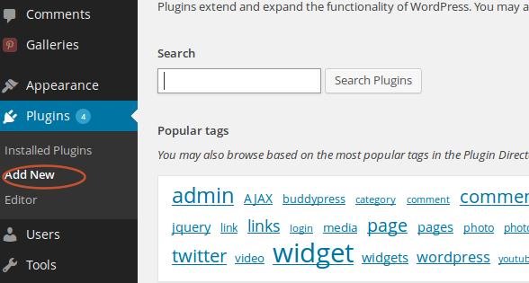 - Hit the Upload link to upload the plugin file.

- Click "browse" button to start uploading
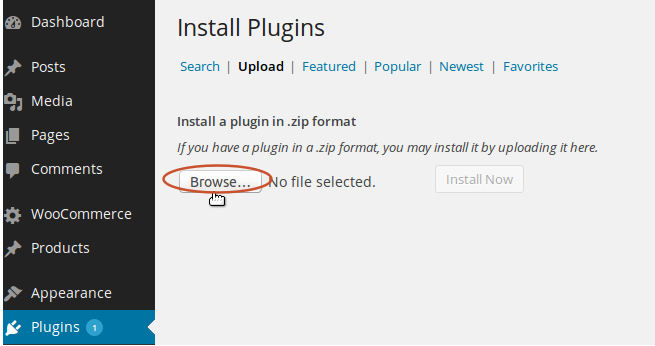 - Select the plugin file "wp-auto-spinner-v-x.x.x.zip" located at your WWW folder and hit Open
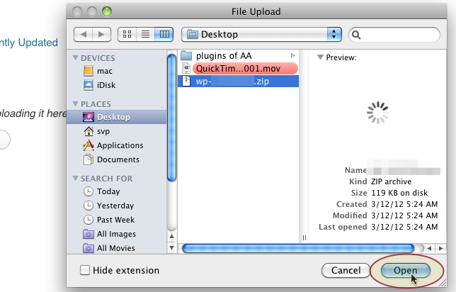 - Click "install now"
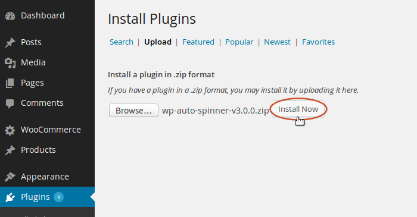 - Activate the plugin
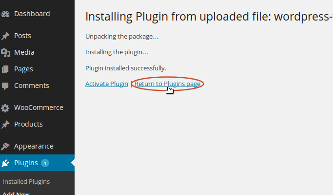
Congratulations now the plugin installed and ready for use. move to the Settings Section to set plugin settings.
B) Plugin Settings - top
-
To set the plugin settings , under "WP Spinner" menu click "settings" . 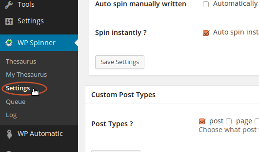
-
Settings will show . check options you need and hit "save options" 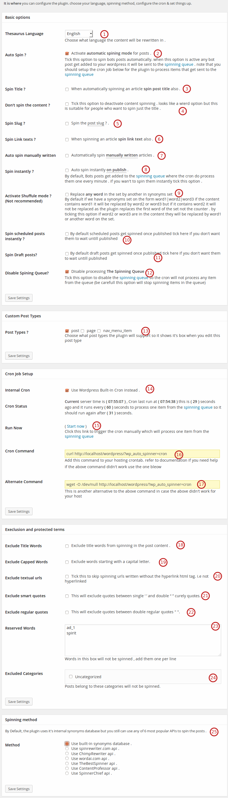
- Choose your blog language
- Activate automatic spin for posts: checking this option will make the plugin automatically spin your posts so if you are auto posting to your blog check it to rewrite your posts.
- Spin post title to : check it to re-write the post title
- Don't spin the content: tick this option if you don't want the content of the post to be spinned. If you checked this the synonyms in the rewritten article editor will not select an alternative
- Spin post slug: check this option to spin the post slug
- Spin links texts:check this if you want to spin the links alt text
- Automatically spin articles I manually write : checking this option will automatically spin posts you manually write so when you preview the post it will get rewritten .
- Spin instantly : check this option for bots posts to get spinned instantly not go to queue .
- Activate shuffule mode : By default if we have a synonyms set on the form word1|word2|word3 if the content contains word1 it will be replaced by word2 or word3 but if it contains word2 it will not be replaced as the plugin replaces the first word of the set not the counter . by ticking this option if word2 or word3 are in the content they will be replaced by word1 or another word on the set.
- Spin scheduled posts instantly : By default scheduled posts get spinned once published tick here if you don't want them to wait untill published
- Spin draft posts : By default draft posts get spinned once published tick here if you don't want them to wait untill published
- Disable spinning queue : Tick this option to disable the spinning queue so the cron will not process any item from the queue (be carefull this option will stop spinning items in the queue)
- Custom Post Types : if you have a plugin that uses a custom post type choose this type for the plugin to support. chosen types will show the plugin box at it's admin page. as example if you have woocommerce and want the plugin to support it tick the "product" post type
- Use internal cron : Posts eligible for spinning get sent to the pinning queue then the cron runs every minute to process one item from the queue. tick this option to use the internal wordpress cron if you will not setup an external cron job .
- Start Now : Click this link to trigger the cron job .
- Cron Command : Copy this command to your crontab when you setup the cron job .
- Alternate Command : another alternative cron command you can use if the above didn't work for you .
- Execlude Title Words : Tick this option for the plugin to execlude title words from spinning on the content .
- Execlude capped words : Tick this option to execlude spinning words with capetal starting letter .
- Execlude textual urls : sometimes the links are written as plain text without the html markup. this will detect links from the context.
- Execlude smart quotes : This will exclude quotes between single ‘ ’ and double “ ” curely quotes.
- Exclude regular quotes : This will exclude quotes between double regular quotes " ".
- Reserved Words: add words you don't like to spin
- Execluded Categories:check what categories you don't like to spin
- Spinning mode:By Default, the plugin uses it's internal synonyms database but you still can use any of 6 most popular APIs to spin the posts .
C) Plugin usage - top
once you installed the plugin you are ready to use . under "Posts" menu click "Add New"
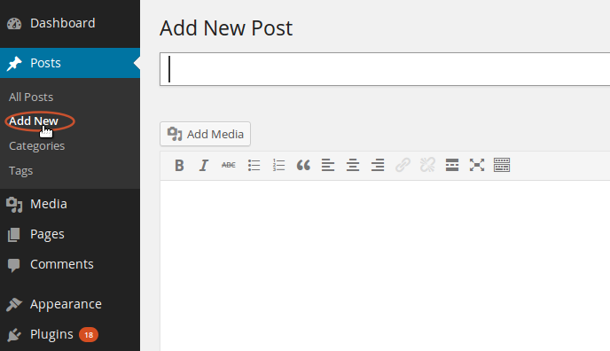
to start using the plugin :
- Write/paste your post content
- click "Rewrite the post"
- Send to editor : will send the rewritten article to the editor
- Generate new post : will generate a new rewritten article
Original article tab : contains original article before being rewritten where you can restore 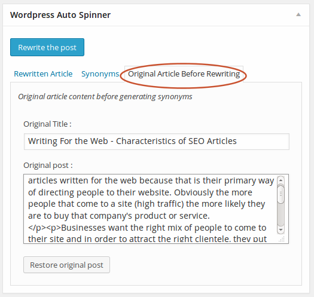
D) Thesaurus - top
Plugin spin the content using a synonyms database which you can edit , add and remove synonyms to edit them visit "Thesaurus" under the plugin menu
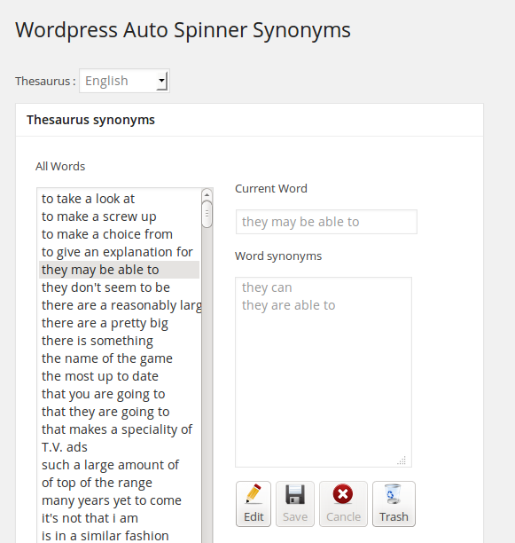E)Custom Thesaurus - top
You can add new synonyms just visit "Custom Thesaurus" and add your new synonyms one word per line on the right form
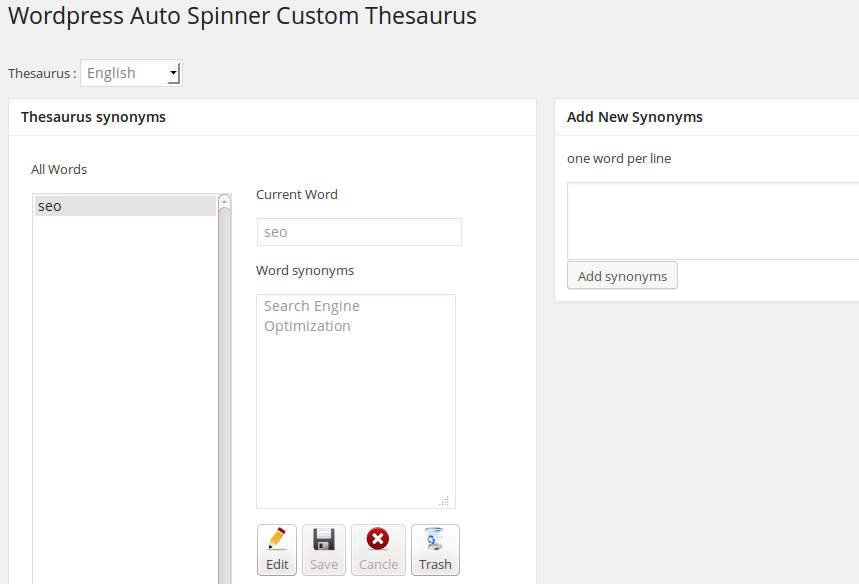G) Waiting Queue - top
When a bot post get added to your wordpress and it is eligible for spinning it will be added to the waiting queue This queue was made to mange server resources smartly 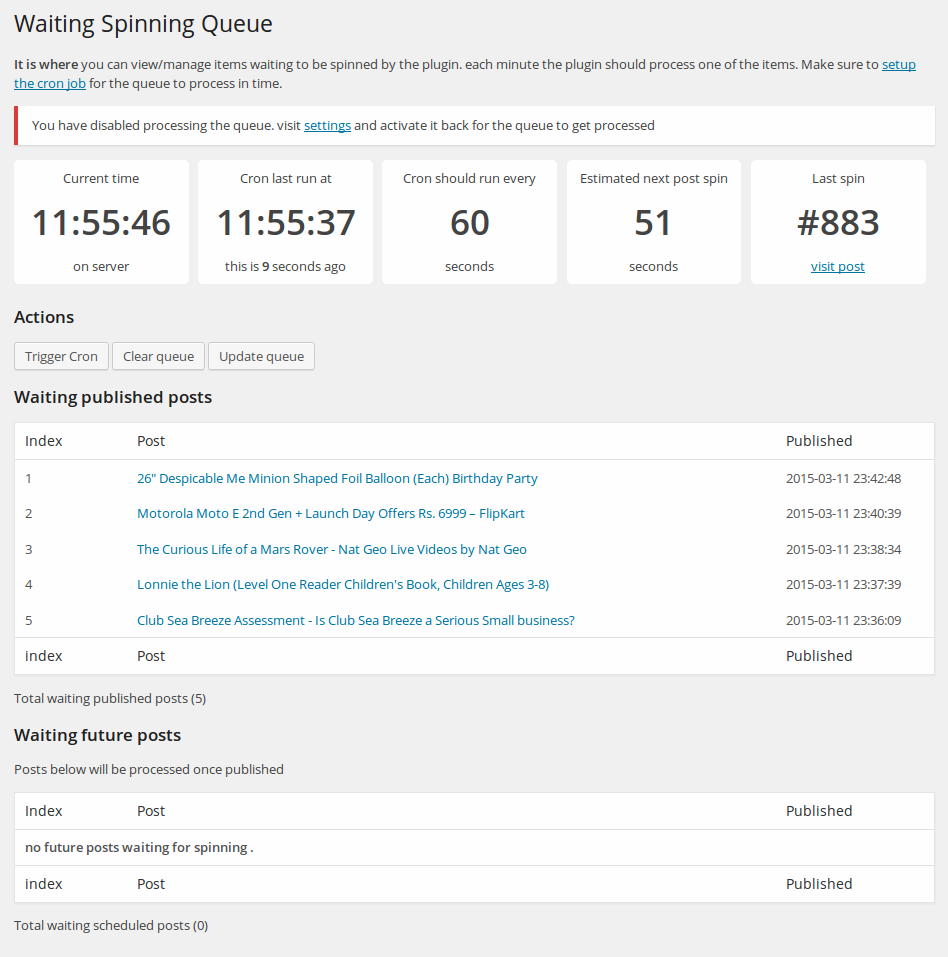
G) Cron Setup - top
To setup a cron job for processing the waiting queue refer to your hosting control panel. find something called "Cron Jobs" this is the case at my hosting account
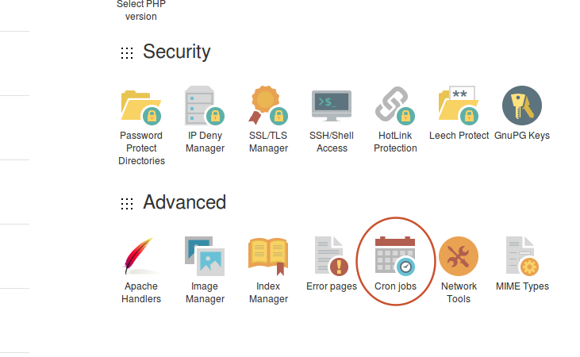
Set it to call every minute and Copy/Paste the cron command to the box
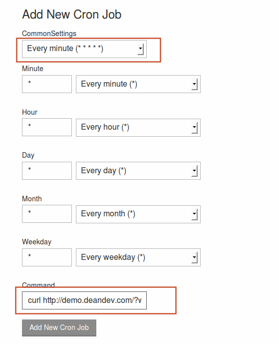
H) Spin old posts - top
The plugin has a bulk spin option which can send posts in bulk to the spinning queue. visit the posts page then select your posts and send to the spinning queue. 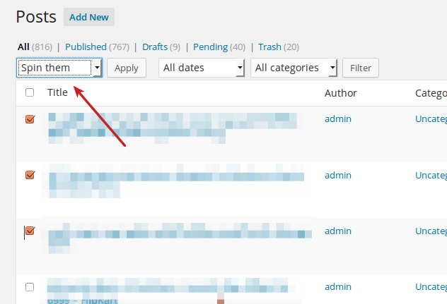
Once again, thank you so much for purchasing this Plugin. As I said at the beginning, I'd be glad to help you if you have any questions relating to this Plugin. No guarantees, but I'll do my best to assist. If you have a more general question relating to the Plugins on CodeCanyon, you might consider visiting the Item page and asking your question in the "Item Discussion" section.
Atef